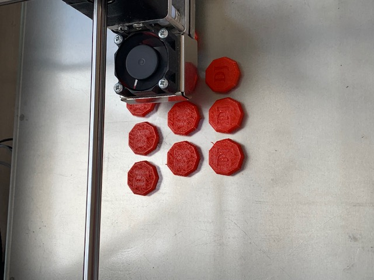

Opdracht
Bij dit tweede teamproject was alles erg belangrijk. De vakken die je had gehad in het jaar moest je toepassen in de opdracht.
In dit project werkten we in een team van 3 meiden. Het project heet ‘Passieproject’. We mochten ons helemaal uitleven met dit project. We mochten onze eigen passie helemaal uitwerken, zodat je met een leuk project van je eigen passie het jaar afsloot. Wij hadden als passie bordspellen. Hierin hadden we iteraties gemaakt en uiteindelijk zijn we gekomen op een kaartspel. Het spel heet ‘Diamantenjacht’ en het is een beetje gebaseerd op ‘Weerwolven’. Bij dit project hebben we ook van het Makerslab gebruik gemaakt. We hebben alles bijgehouden in een productbiografie.
Keuzes die wij hebben gemaakt zijn bijvoorbeeld om de diamanten plat te maken in de 3D-printer. Dit kostte minder tijd en ze zagen er nog steeds uit als diamanten. Verder hebben wij de kleuren een beetje donker gehouden, omdat het een spannend spel is. De personages op de kaarten hebben wij zelf gemaakt met onder andere twee docenten. Hieronder zie je mezelf op de rollenkaart. Ook hebben we ervoor gekozen om het spel in twee aparte ruimtes af te laten spelen. Zo is het spannender en moeilijker om te raden wie de diamantenhandelaren zijn.
Ik heb geleerd hoe Illustrator werkt voor de rollenkaarten en ik heb geleerd hoe ik een eigen kaartspel maak door te denken aan de vormgeving en de content. Alle content is zelf gemaakt, niks is van internet. Mijn cijfer was uiteindelijk een 9,2.
Concluderend, als je meer tijd hebt voor een project zou het er natuurlijk altijd nog beter uit kunnen zien, omdat je langer ermee bezig bent en meer iteraties kunt maken.
Link naar pdf van rollenkaarten en spelregels: Rollenkaarten Diamantenjacht + Spelregels Diamantenjacht
